Ship production systems
Not demos. Real agents, apps, stores, and ERP modules your team runs every day.
Los Angeles · Digital Agency · IT Studio
Christina Jaramillo
A full-stack IT studio for AI, automation, web, mobile, ecommerce, and business platforms—built with the precision of an agency and the depth of an engineer.
Now building AI & Automation

The studio
Built with judgment.
I partner with founders and operations leaders who need more than a landing page—a full IT partner who ships AI, automation, ecommerce, and business platforms that hold up in production.
LoveThisLife spans the stack: React and Node backends, Shopify and WordPress storefronts, Odoo ERP, Bubble apps, and Python pipelines that connect everything.
Not demos. Real agents, apps, stores, and ERP modules your team runs every day.
From AI and Python to Shopify, Odoo, and custom code—one partner, one coherent architecture.
Every engagement tied to outcomes: conversion, handle time, processing speed, or hours reclaimed.
Practice areas
Every engagement draws from a deep bench—AI, engineering, commerce, and business systems working as one.
Agents, RAG, workflow orchestration, document intelligence, and Python scripts that eliminate manual loops across CRM, finance, and ops.
Production-grade web apps, APIs, and cross-platform mobile—designed for performance, maintainability, and real user workflows.
Shopify Plus, WordPress, and Wix builds—from theme customization to checkout optimization, integrations, and conversion-focused UX.
Odoo ERP implementations, Bubble no-code apps, Power Platform, and CRM/ERP sync—unified systems for sales, inventory, and finance.
Solutions & services
Twelve offerings in a flowing grid—AI, engineering, commerce, and business systems.

Custom agents for research, support, and multi-step tasks—with guardrails and human handoff.

Orchestration across CRM, ERP, email, and ops—approvals without chasing.
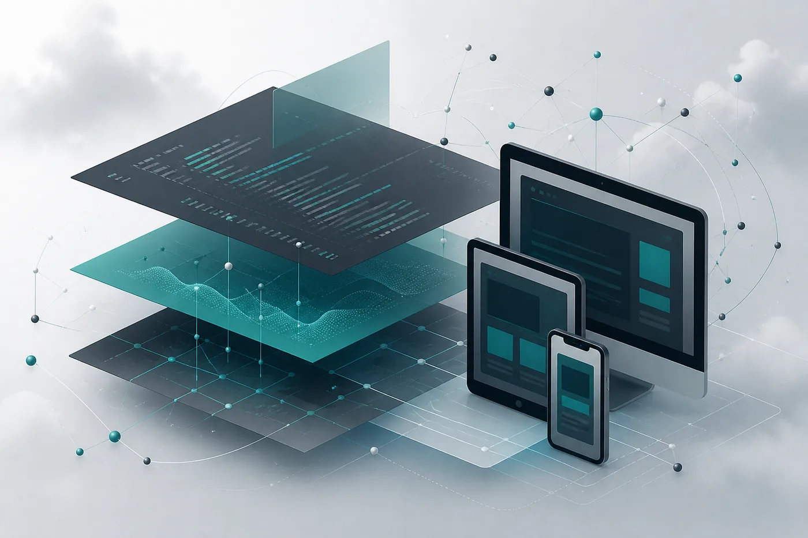
React, Next.js, Node, and APIs—deployed and monitored for production.
Cross-platform mobile with push notifications, offline sync, and polished UX.
Store builds, theme dev, checkout flows, and marketing automation for DTC.
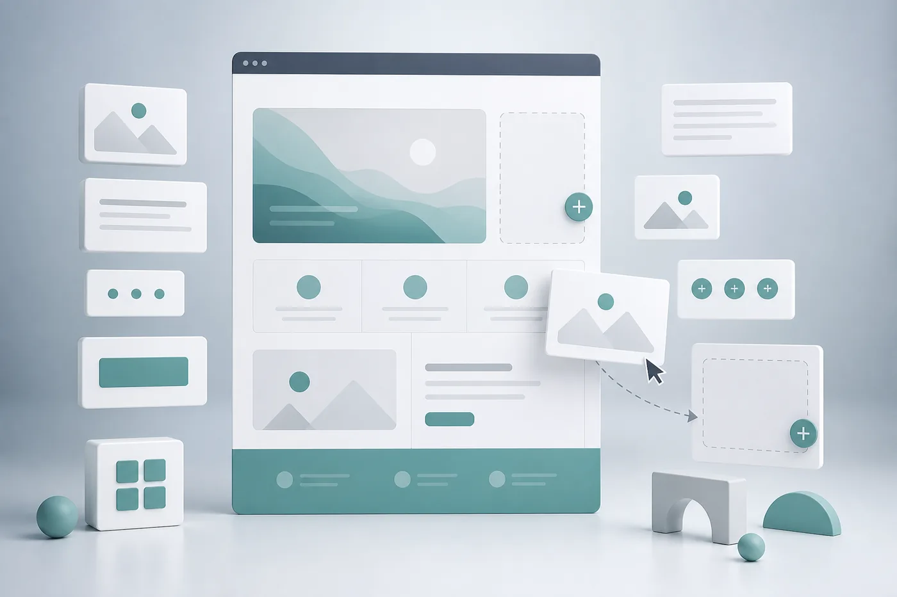
Custom themes, SEO-ready sites, and headless CMS for content teams.
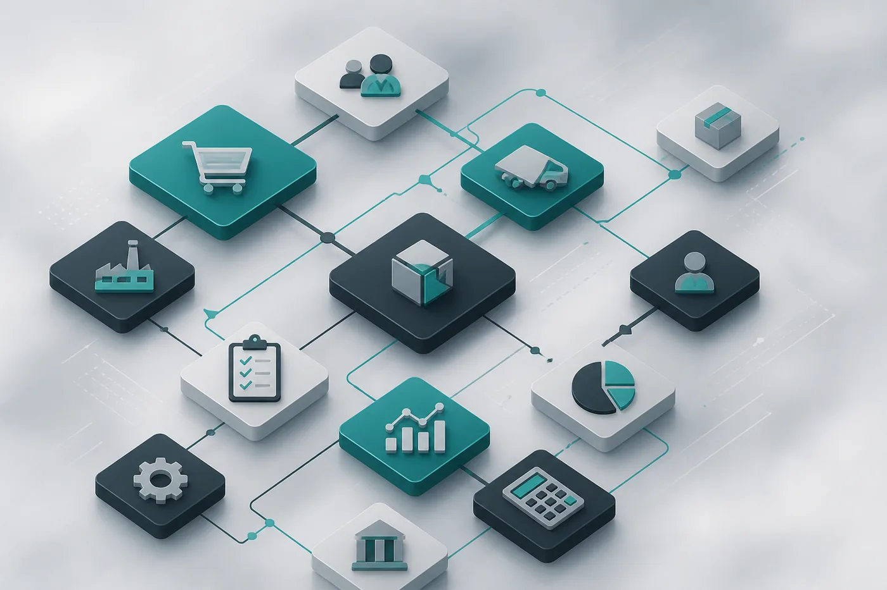
Sales, inventory, accounting—configured, integrated, and adopted by teams.
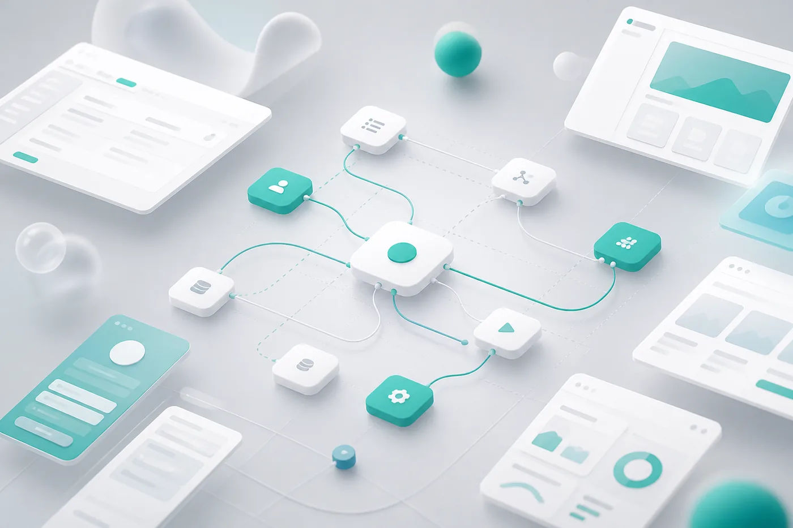
Rapid MVPs and internal tools—workflows, permissions, and API connections.
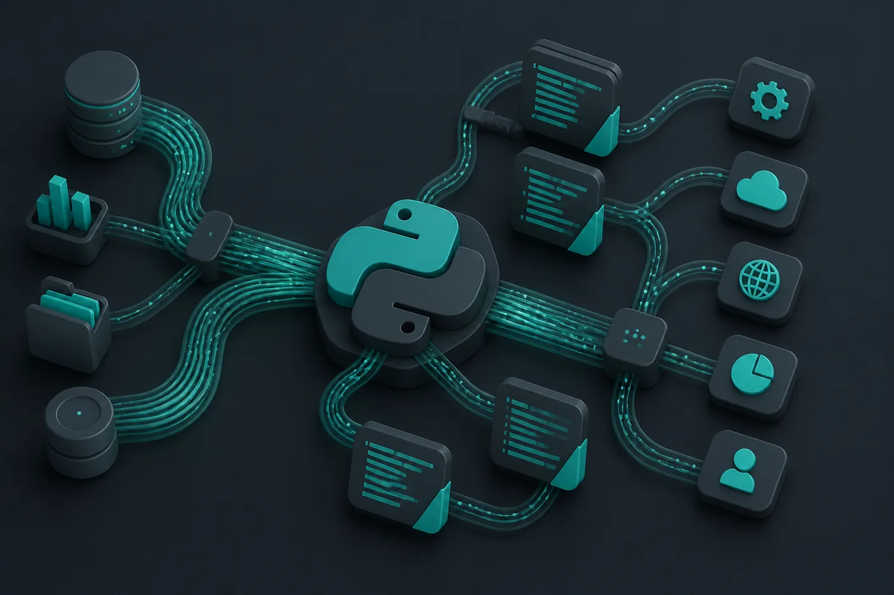
Scripts, schedulers, and data pipelines—ETL, reporting, and API glue.

Salesforce, HubSpot, NetSuite, Dynamics—one story across systems.

Dashboards and low-code apps wired to CRM, ERP, and Dataverse.

Extract, classify, and route invoices and contracts into your systems.
Technology stack
12
Solution areas
9
Production projects
25+
Platforms in use
LA
Los Angeles · remote-friendly
Capabilities
Four clear practice areas—each with the skills that belong together, not a flat list.
AI agents, Python pipelines, workflow orchestration, and governed delivery.
Full-stack web, APIs, and mobile apps built for production scale.
Storefronts, CMS sites, and conversion-focused digital experiences.
ERP, CRM, no-code, and analytics platforms that run the business.
Selected work
Fifteen compact case studies—real product UIs, outcome first, stack second.

Custom Shopify theme, subscription flows, and inventory sync with Odoo. Klaviyo and Meta pixel integrations, plus Python scripts for daily sales reporting into Slack—replacing a fragmented WordPress + manual ops setup.

React Native mobile app for technicians with offline job sheets, photo capture, and GPS check-ins—paired with a Next.js admin portal, Node API, and PostgreSQL backend deployed on Vercel and AWS.

Implemented Odoo for sales, inventory, purchase, and accounting with Shopify order sync and custom Python middleware. Replaced four spreadsheets and a legacy Wix site with one operational source of truth.

Designed and shipped a grounded support agent across 14,000+ help articles and release notes. Escalation rules route edge cases to specialists; every reply syncs notes into HubSpot.

Document AI extracts vendor line items, matches purchase orders, and flags exceptions to Slack with a human approve gate. Approved invoices post to QuickBooks with attachments and audit IDs.

Bi-directional sync between Salesforce and NetSuite for accounts, opportunities, quotes, and fulfilled orders. Conflict rules and idempotent webhooks keep finance and sales aligned.

Built a Power BI semantic model over CRM and ERP for pipeline, fulfillment, and SLA health—paired with a Power Apps form that writes back to Dataverse and triggers approvals.

Automated scoring, enrichment, and personalized first-touch drafts with mandatory human approval before send. Salesforce ownership and SLA timers keep follow-up consistent.

RAG assistant over SOPs, playbooks, and product changelogs with citation links and role-based access. Feedback loops feed content gaps back to enablement.
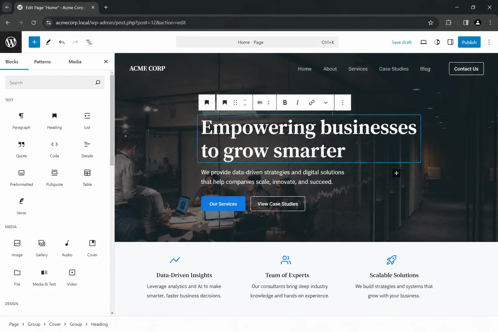
Custom block theme, SEO schema, and editorial workflows for a multi-location firm. Migrated legacy Wix pages, set up staging, and wired form submissions into HubSpot with UTM attribution.
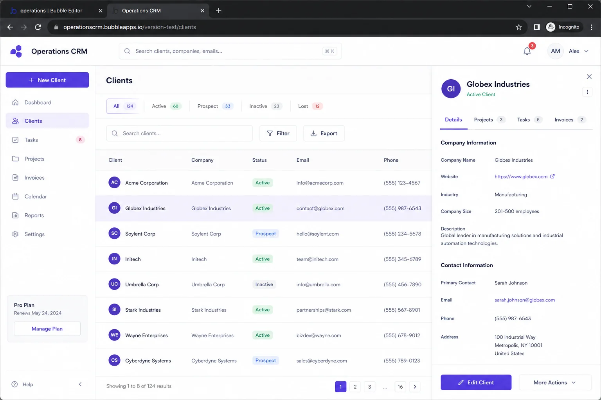
Built a role-based Bubble app for job intake, driver assignment, and client status updates—connected to Airtable and Stripe via API workflows before the team scaled to custom code.
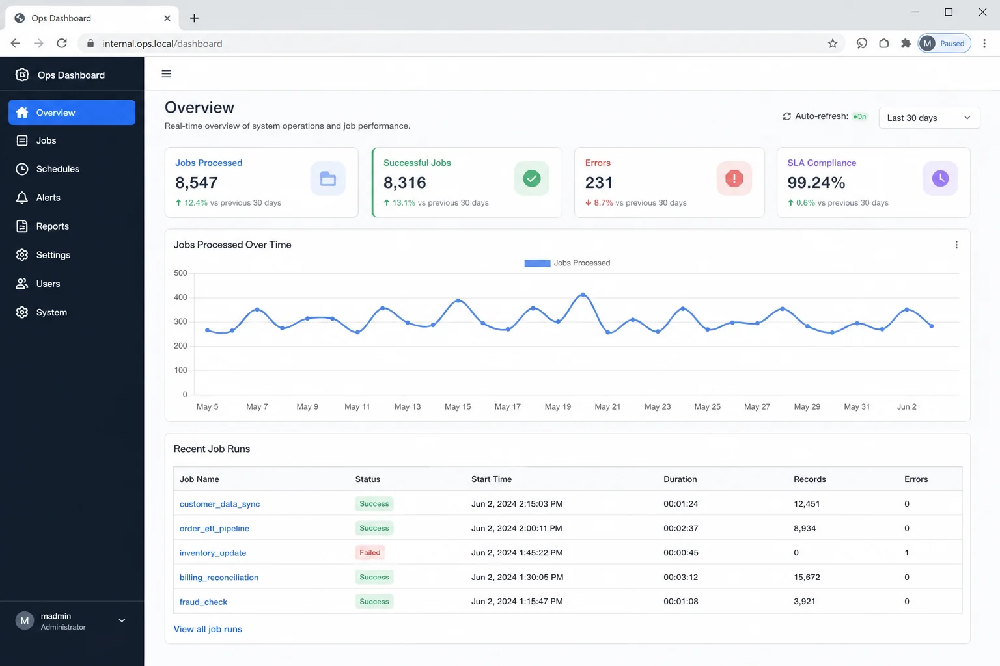
Scheduled Python pipelines pull Shopify, ads, and warehouse CSVs into Postgres; Flask dashboard shows run history, row counts, and Slack alerts on failure—with retry logic and audit logs.
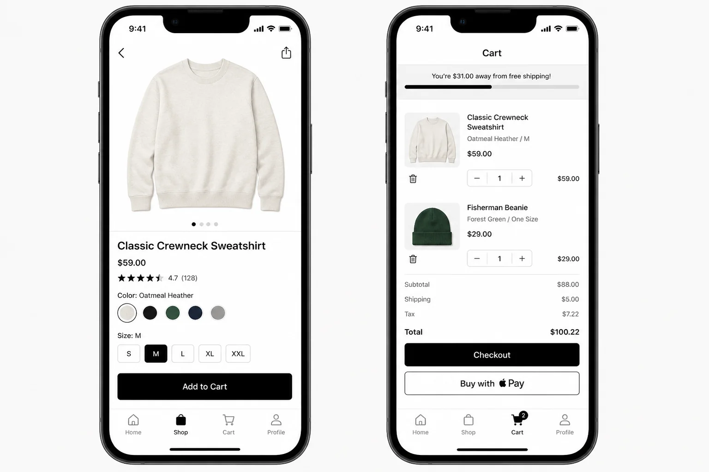
Shopify Storefront API–powered iOS and Android app with saved carts, push promos, and subscription management—sharing the same catalog and inventory rules as the web store.
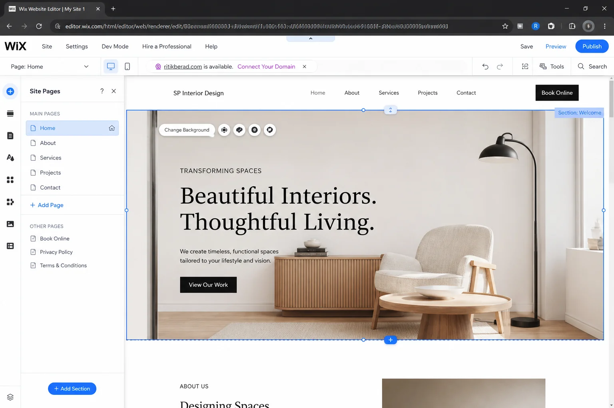
Redesigned a Wix site with clearer service pages, Google Business sync, and automated booking confirmations via Zapier into Google Calendar and SMS reminders.
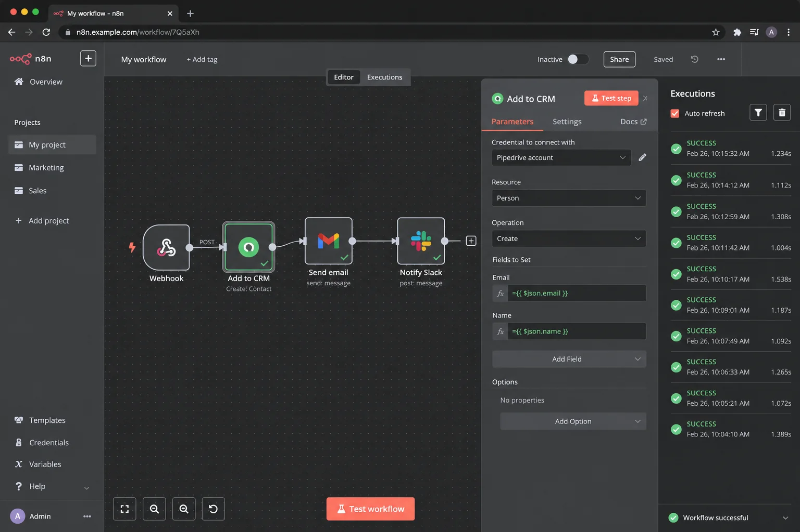
Central n8n instance orchestrates new-client setup: CRM account creation, folder provisioning, Slack channels, and templated welcome sequences—with error branches and daily health reports.
How I work
A refined delivery rhythm—four stages, zero guesswork.
Stage one
Map workflows, tools, and pain points. Find where AI, code, or a platform like Odoo or Shopify fits best.
Stage two
Architecture, metrics, and human checkpoints. Prototype the critical path before full build.
Stage three
Ship integrations, agents, storefronts, and APIs. Harden for real volume and real users.
Stage four
Train the team, document runbooks, and leave a system they can run independently.
“The best systems disappear into the workflow—and leave a clear trail when something needs attention.”
About
Founder, LoveThisLife · Los Angeles
I show up for every client with clear energy and follow-through—building AI, full-stack apps, ecommerce, and business systems that feel invisible when they work, and transparent when they don't.
Based in Los Angeles, I partner with startups and established companies who want fewer manual loops, stronger digital presence, and clearer operational leverage across the entire IT stack.